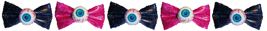
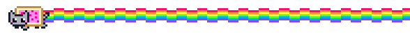

bugg's blog !


not seeing something? check the blog entry archive linked in the sidebar!

4/27/26 8:21 AM
yayyyy! its the best day ever!!! my lovely girlfriend made me cookies and put them in a supercute box she painted to look like an alien. AND I LOVE ALIENS!!! shes so sweet she's just absolutely made my day. she knew i was in the depths of doom and gloom rn, so she made them for me to make me a bit jollier. it has very muched worked because i feel so awesome silly superstar rn. i made her a little bunny out of air dry clay but i feel like my gift was so lame in comparison (T-T) but everyday im so happy to see her and im very grateful to have her in my life. we got a clue from our band directtors about next year's marching show, plus my performances on friday and sunday went very well !! friday i had a lot of fun, even though i had to be around my aformentioned antagonizer. i played very well and had almost no major mistakes. i think i played with good sound and i had a lot of fun too. it's not very often anymore that i just have fun playng and feel like im making a beautiful sound, but it's small things like that the keep me from quitting. and after 6 more weeks it'll be more good than bad. it is a good day today. im feeling much better.
footnote: i'm trying to find in my heart not to extend my anger with them onto my friend. he's unaware and i can't fault him for what he doesnt know, and that i won't tell him. (not that i could tell him if i even wanted to, but it is what it is.) six weeks will be short enough that i can just let it pass without telling him. ive dealt with them since sixth grade, and they're almost gone. friendships will always ebb and flow. i can hope we stay friends when he graduates, but some things will come and go regardless of how i feel about it. i'll be alright regardless.
4/30/26 9:22 AM

hi hi! im killing the poem page and making a new one! i will also link the youtube and discord on the homepage as well. hopefully soon i can fix the links once my assignment im hosting on here is finished and graded. dress up is still a work in progress!
and besides all that work related stuff, i am DYING of allergies. blech.
5/1/26 8:22 AM
it's the first day of my favorite month! yipeee! also slowens discord is up and running which is super awesome! the poetry page is also going very well! im in the process of styling and then compiling all the works i want in there. very fun!
5/4/26 12:37 AM
my nose is runny and everything feels irritating. bad day.
5/6/26 9:15 AM
yayyy!! i got my github and vs code to word w neocities :3 im so happy, and also i installed new themes for vs code for a pink editor and also rainbow indents. so cute!! i also installed auto close tags because i have it turned on for neocities and im prone to forgetting when it's turned off! lazy? maybe... but it works well for me!
5/11/26 8:25 AM

waow waow waow!!!! 10k views on the site!! im pleasantly suprised that my site has gained some traction!!! im taking suggestions on whta to build next in celebration, so lmk what you wanna see! i obvi will continue current porjects but also wanna get some inspo from the ppl who support my site :D im very grateful to everyone who reads my little blogs, writes in the cbox and guestbook, and generally interacts w my silly little passion project! im beyond thrilled that people have taken an interest in my site. also, the british have found my site! i rlly like the flag counter up on the homepage, its fun to see where my visitors are from. overall, ty very much guys!! mwahh <3 !
5/13/26 8:25 PM
i am sooooo happy! i had a performance today and it went very well. i had fun and they even gave me a little snack. and for band we will go to dorney park! i have never been there so i am very excited and i will hang out with 2 friends. also i go to the zoo tommorow!! and some of my flowers sprouted so i gave them to my wonderful girlfriend.
5/14/26 8:23 AM
hooray! what a very jolly day it will be. state testing is over now which makes me more jolly because i hate state testing. and i am still working on a gift for my girlfriend who i love very much. i will ask her today if she wants to hang out this weekend. also dorney park soon!!! i am so excited. and last nights performance was pretty good too. overall a good time for bugg. i hope the universe continues to smile on me because life is infinity swag and awesome rn!!! yippee yahoo hooray!!!!! also my teacher gave us sourdough and let us try his wife's jellies she made and i tried the dandelion jelly and the violet jelly. they were so yum. i am so mad that my fatass classmates ate all the rest of the bread so now there is no more for bugg. it was so good.
5/15/26 9:13 AM
helloooooooo!! i am happy today. got to give my girlfriend a gift which is one of my favorite things to do. i love giving her presents. also its friday!! and dorney park is tommorow! im so jolly and excited yippeee!! my sub in chemistry is kinda rude and implied that i wasn't doing work and was copying my class mates answers, which was not true, and that made me kinda mad. she also stayed in my space for like a whole two inutes. yuck ! i do not enjoy being withing close proximity of strangers. only 4 weeks left of school tho! im anticipating summer so much rn. i need to be freeeeeeeeeeeeeeeeeeeeeee grrRRgGRrRgggRAAAaaHHHHHHHHHhhHHHHH!
5/19/26 9:09 AM
owie owie owie. i have the worst headache in my right eye. it hurts so bad and its so hot out. bad bad bad.
5/21/26 9:09 AM
im so nervous its making me nauseous. we're practicing taps today and if i mess it up, its over. they still might kick me off. and if they leave me on and i mess it up during the assembly, im dead. everything will be over. no chance at seciton leader, no chance at solos ever again, nobody will ever respect me again. im scared
5/26/26 8:18 AM
good morning!!! friday went alright other than a minor mistake but ulrich said i was ok so im ok. i got my phone back too!! it got taken bc i threw coffee at my brother which is a long story short but basically he deserved it so whatevs. anyways i got to make cookies for my gorgeous girlfriend which brings me immense joy. very jolly day!5/28/26 8:22 AM
i havent updated much and i feel bad about it, but im drowing in work and feel worse and worse everyday. i don't even want to talk about it because teven hat feels too feminine. im not so dense that i can't realize that's just my own internalized sexism, but i doesnt make me hate it any less. everything i do feels feminine. i wondered this morning if my socks were girly. i hate everything so much. i feel like im a dumb alien in everything, especially with my friends. i feel like an idiot. i feel like everyone's just barely tolerating me. im so nauseous.
6/2/26 10:55 AM

 hello little babbies! im feeling much better lately. while i was gone, i was working on a project! the logic is MOSTLY done, with some minor node counting issues, but if u wanna check out my fish classification joke, out /fish on the homepage's address. its nowhere near done, it has zero styling, but its a sneak peak for my more dedicated lurkers. summer updates might get sparse again, but i promise i wont neglect you guys all summer and if i have time i ,might make an art gallery to post here to feed u guys more content. sorry its boring rn, ive been focused on sorting out a gift for my gf's birthday, riley if you're reading this DONT TELL HER and also finals are frying me and im only writing when i can, which isnt often! but know i love and cherish you all dearly. and happy pride my beloveds. mwahhhhhhh !
hello little babbies! im feeling much better lately. while i was gone, i was working on a project! the logic is MOSTLY done, with some minor node counting issues, but if u wanna check out my fish classification joke, out /fish on the homepage's address. its nowhere near done, it has zero styling, but its a sneak peak for my more dedicated lurkers. summer updates might get sparse again, but i promise i wont neglect you guys all summer and if i have time i ,might make an art gallery to post here to feed u guys more content. sorry its boring rn, ive been focused on sorting out a gift for my gf's birthday, riley if you're reading this DONT TELL HER and also finals are frying me and im only writing when i can, which isnt often! but know i love and cherish you all dearly. and happy pride my beloveds. mwahhhhhhh ! also i got a massive bag of peanut mnms and im munching. so jolly. i love being a greasy american chud.
6/4/26

 its been a mostly good day! ive gotten mostly all my schoolwork done for the year so im a tad bit bored, but ive got the fish project and other html and css stuff to work on, as well as the ever expanding task of the animal database. what a pain but at least it keeps me busy, right?
its been a mostly good day! ive gotten mostly all my schoolwork done for the year so im a tad bit bored, but ive got the fish project and other html and css stuff to work on, as well as the ever expanding task of the animal database. what a pain but at least it keeps me busy, right?on another note, the year's almost over. im dreading my friends graduating. i think itll only get worse every year. im gonna go tree climbing with my friend this weekend which is fun, but we're running out of time. im hanging out with some friends and my gf at the pool today which is nice, but they'll be working on hw while we're there and i dont like swimming so idk what i'll do. i ought to start packing for the summer. i'm putting it of as long as i can but im running out of time. i feel like that's kind of a motif in my life rn, im always running out of time for something, and as soon as one deadline hits, another starts rushing toward me. i love my friends and i love my gf and i'm going to hate missing them all. not the best experience ): it'll pass and i'll see most of them again next year, i suppose. i feel like all the friends i wanna see the most are the ones leaving forever, though. this mini blog entry has gotten much too long, so i'll shut up.
6/8/26 2:35 PM


i survived the neocities outage of 6/5/25!!!!
i thought my school had banned neocities and i cried so hard....
hi hi hi little babbies! it is a good day! i was able to give my gf her birthday present (: and!! and!! and!! i got 99/100 on a final i didnt study for at all! i havent studied for a single final but ive been getting 90s on all of them so clearly im gods favorite (angela if you're reading this im joking; im not being insensitive.) so im pretty happy! i also bought some snacks this weekend that i got to eat today while working on my fish project. i couldnt wish for a better day!!! chudmaxxing, coding, and eating the yummy snacks and drinking the yummy drinks. i am so jolly!! my weekend wasnt bad at all either. i worked thursday and saturday, so i should make maybe 70 bucks after tax? and im not a big spender so that should be enough for fun money for vacation. yay! and also!!! major update!! i bought my first binder! its being shipped today so itll likely be here by the end of the week. i will provide a review including brand name and price, alongside my reccomendation and thoughts. IM SO HYPE IM GONNA BE SO BOY!!!!!!!!!!!! WAOOOOWWWWW!
V social panel ! V